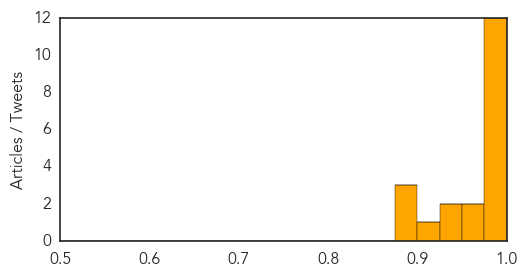
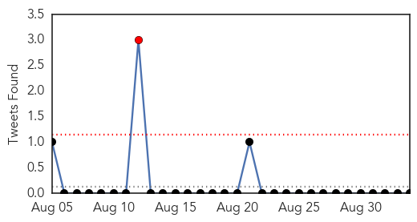

MERS
30-Day Web Trend
1 alerts, 0 warnings

30-Day Twitter Trend
1 alerts, 0 warnings

Article Locations

Article Confidences
Top Articles:
- 0.997
- Filipina nurse tests positive for MERS-Cov
- 0.996
- OFW tested with Corona virus arrived
- 0.995
- Coming home to SARS fears
- 0.994
- Philippines checks passengers for Mers
- 0.992
- Philippines checks passengers for Mers
- 0.991
- Filipino nurse from Saudi Arabia positive for MERS
- 0.989
- Filipino nurse from Saudi Arabia positive for MERS-Cov; isolated at Davao City hospital
- 0.988
- DOH: Filipino nurse with MERS-CoV arrived in PH
- 0.986
- DOH-7 to trace co-passengers of Pinay nurse with MERS-CoV
- 0.984
- DOH: Nurse who arrived in Philippines tested positive for MERS-CoV
- 0.977
- 2nd MERS patient enters PH
- 0.977
- OFW nurse tested with Corona virus (MERS-CoV) arrives in the Phillippines
- 0.972
- DOH: Middle East Respiratory Syndrome–Coronavirus patient confined at Davao hospital
- 0.962
- Philippine gov't confirms Filipina nurse infected with MERS-CoV - Xinhua
- 0.941
- Overseas worker tests positive for Mers
- 0.930
- DOH tracing passengers of 2 flights as Saudi test shows returning Pinoy nurse positive for MERS
- 0.924
- Filipino nurse tests positive for MERS virus
- 0.896
- Filipino nurse from Saudi Arabia positive for MERS - Kuwait Times
- 0.881
- Filipino nurse from Saudi Arabia positive for MERS
- 0.877
- Headlines, News, The Philippine Star
Top Tweets:
-
No tweets found for Sep 03, 2014
Swine Flu
30-Day Web Trend
0 alerts, 0 warnings

30-Day Twitter Trend
1 alerts, 0 warnings

Article Locations

Article Confidences

Top Articles:
Top Tweets:
-
No tweets found for Sep 03, 2014